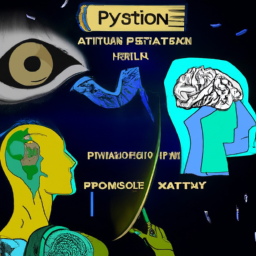

The future of Python and AI
The future of Python and AI is an exciting prospect. With the increasing popularity of Python, and the growing demand for AI in the tech industry, this language is becoming more and more important. Python is a versatile language that is used in many different areas, from web development to machine learning and data science. With the rapid development of artificial intelligence, Python is becoming a valuable asset for businesses and professionals.
Python has become an essential tool for any tech company or professional looking to develop applications and software. With its easy-to-learn syntax and powerful library of modules, it is becoming a popular choice for AI development. Python is widely used for machine learning, data analysis, and natural language processing. With the rise of AI, Python is becoming even more important, as it is used to build the algorithms and models that power AI applications.
Python is also becoming increasingly popular for game development. With the growing demand for realistic graphics and immersive gameplay, Python is becoming an essential tool for game developers. Python can be used to create complex game mechanics, AI agents, and physics engines, making it an ideal language for game development.
The possibilities for Python and AI are endless. With the continuing development of this language, the potential for AI applications is only increasing. Python can be used to develop applications that can automate many tasks, from repetitive tasks to more complex tasks such as facial recognition and natural language processing. Python is becoming an essential tool for any business or individual looking to stay ahead of the curve when it comes to AI development.